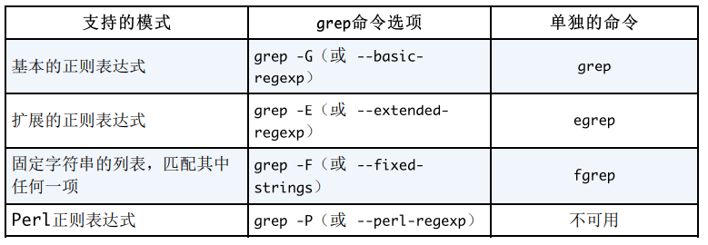

原文：https://blog.csdn.net/weixin_42558057/article/details/82758467
作者：阿木娄
本文内容从：https://www.cnblogs.com/itech/p/5535080.html 翻译而来

1、grep
grep是“Global Regular Expressions Print”的首字母缩写词，意为全局正则表达式打印。
grep是一个逐行扫描指定文件或文件的程序，返回包含模式的行。模式是一种表达式，它通过将字符解释为元字符来指定一组字符串。例如，星号元字符（*）被解释为“前面元素的零个或多个”。这使用户能够在grep命令中键入一系列短字符和元字符，以使计算机向我们显示哪些文件匹配的行。
标准grep命令如下所示：
grep <flags> '<regular expression>' <filename>
grep将搜索结果打印到屏幕（stdout）并返回以下退出值：
0 A match was found.
1 No match was found.
>1 A syntax error was found or a file was inaccessible
(even if matches were found).
一些常见的标志是：
-c 用于计算成功匹配的数量而不打印实际匹配
-i 以使搜索大小写不敏感
-n 在每个匹配打印输出之前打印行号
-v 以获取正则表达式的补码（即返回行不匹配）
-l 打印带有与表达式匹配的行的文件的文件名
2、egrep
egrep是“Extended Global Regular Expressions Print”的首字母缩写词。
egrep中的’E’表示将模式视为正则表达式。在Egrep中启用了“扩展正则表达式”缩写为“ERE”。egrep（与grep -E相同）将 +， ?， |， (， ) 作为元字符。
在基本的正则表达式（使用grep），元字符 ?， +， {， |， (， ) 失去了特殊的意义。如果你想用grep对待这些字符作为元字符，需要转义 ?， +， {， |， (，)。
例如，grep使用基本的正则表达式，其中plus按字面处理，返回任何带有加号的行。
grep "+" test.txt
|
另一方面，egrep将“+”视为元字符并返回每一行，因为plus被解释为“一次或多次”。
egrep "+" test.txt
|
这里返回每一行，因为egrep将 + 视为元字符。普通grep只搜索带有文字的行 +。
3、fgrep
fgrep是”Fixed-string Global Regular Expressions Print”的首字母缩写，意为固定字符串全局正则表达式打印。
fgrep（与grep -F相同）是固定的或快速的grep，其行为与grep相同，但不会将任何正则表达式元字符识别为特殊的。搜索将更快完成，因为它只处理简单的字符串而不是复杂的模式。
例如，如果我想在我的.bash_profile中搜索文字点.(dot)，那么使用grep将很困难，因为我必须避开点，因为dot是一个元字符，意思是“任何单个字符”：
|
上面的命令返回test.txt的每一行。改为：fgrep "." test.txt
|
然后只返回具有文字’.’的行。fgrep帮助我们不用再费心避开元字符。
4、pgep
pgrep是首字母缩略词，代表“Process-ID Global Regular Expressions Print”。
pgrep查看当前正在运行的进程，并将与选择条件匹配的进程ID列出到stdout（屏幕）。当你想要某个进程的PID时，pgrep很方便。
例如，如果我只想知道我的nginx进程的进程ID，使用pgrep nginx将返回进程ID 值 ，如:
|
使用-l参数返回进程ID同时显示进程名，如pgrep -l nginx ：
|
附：
1、grep命令格式1
grep [-acinv] [–color=auto] ‘搜寻字符串’ filename
选项与参数：
-a ：将 binary 文件以 text 文件的方式搜寻数据
-c ：计算找到 ‘搜寻字符串’ 的次数
-i ：忽略大小写的不同，所以大小写视为相同
-n ：顺便输出行号
-v ：反向选择，亦即显示出没有 ‘搜寻字符串’ 内容的那一行！
–color=auto ：可以将找到的关键词部分加上颜色的显示喔！
2、grep设置查找匹配结果颜色高亮2
使用grep --color的–color选项可以给搜索匹配结果颜色高亮（单次有效），如果要每次都能自动添加颜色，可按如下修改~/.bashrc文件：
|
–color有三个值供选择：never、always、auto。always和auto的区别就是，always会在任何情况下都给匹配字段加上颜色标记，当通过管道或重定向时就会多出一些控制字符，结果会变成
export [[1;32m[[KGREP[[m[[K_OPTIONS=’–color=always’
export [[1;32m[[KGREP[[m[[K_COLOR=‘1;32’
而auto则只在输出到终端时才加上颜色。
也可以通过设置GREP_COLOR的值来指定颜色
export GREP_OPTIONS='--color=auto'
具体用什么颜色，可以通过
export GREP_COLOR='a;b'来设置，默认是1;31，即高亮的红色 ，其中:
a可以选择:【0,1,4,5,7,8】
0 关闭所有属性
1 设置高亮度
4 下划线
5 闪烁
7 反显
8 消隐
下面是部分颜色的值
30 black
31 red
32 green
33 yellow
34 blue
35 purple
36 cyan
37 white
以上设置只针对当前用户有效，如果对所有用户生效，可按上述方法修改/etc/profile文件。
3、正则表达式
正则表达式相关文章：
- 百度百科：正则表达式
- 正则表达式（grep，egrep，fgrep） https://blog.csdn.net/dyllove98/article/details/41284705
- 菜鸟教程-正则表达式 http://www.runoob.com/regexp/regexp-tutorial.html
- grep设置查找颜色高亮 https://blog.csdn.net/mojinchuan/article/details/51899787 ↩︎
- 在linux下给grep命令添加颜色 http://blog.csdn.net/diy534/article/details/7025640 ↩︎